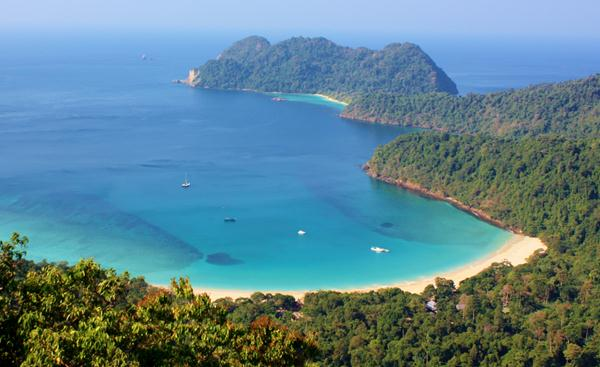
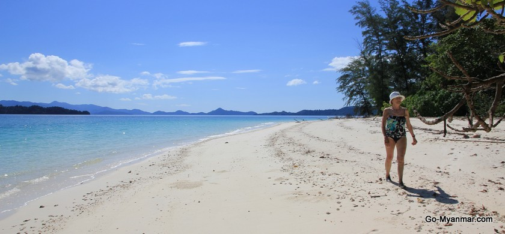

Myeik
.jpg)
Myeik
a city in Tanintharyi Region in Myanmar (Burma), located in the extreme south of the country on the coast of an island on the Andaman Sea. As of 2010 the estimated population was over 209,000. The area inland from the city is a major smugglingcorridor into Thailand. The Singkhon Pass, also known as the Maw-daung Pass, has an international cross-border checkpoint.
Myeik was the southernmost part of the Pagan Kingdom between the 11th and 13th centuries. After the Pagan Empire's collapse in 1287, Myeik became part of successive Thai kingdoms from the late 13th century to the middle of 18th century: first the Sukhothai Kingdom and later the Ayutthaya Kingdom. A brief period of Bamar rule interrupted this between 1564-93.
.jpg)
From the 16th century on, the city was an important seaport and trading center with the Europeans, who would land at Myeik (then called Mergui), travel upriver to Tanintharyi(Tenasserim) and then cross the mountains to reach Ayutthaya. The French officer Chevalier de Beauregard was made Governor of the city of Myeik after the Siam-England war (1687)that resulted in the English being expelled from Siam.[3] De Beauregard was named Governor by Narai, the king of the Ayutthaya Kingdom, replacing an Englishman, Samuel White.[4] The French were then expelled from Myeik following the Siamese revolution of 1688.
The Burmese captured Myeik in 1765 as part of an invasion that would ultimately topple the Ayutthaya kingdom in 1767. In 1826, the Burmese ceded the region to the British after the First Anglo-Burmese War (1824–1826). In the Pacific Theater of World War II, Imperial Japanese forces used laborers to construct the Mergui Road to aid their retreat after rail line were destroyed by Allied bombings.
.jpg)


Myeik is a town in Tanintharyi Division. It is in the southern part of Myanmar. It has a seaport. Myeik is small, but it is a very important town in Myanmar. It is also the coastal capital of Coastal Command. The town is close to the sea, so the weather is neither too hot nor too cold. The area of Myeik is 7783 square miles.
As of 2014, the estimated population was over seven lakh. They are workers, government servants, traders, business men and fishermen. Most of the people are Myanmar and Buddhists.
.jpg)
.jpg)
.jpg)
The Theindawgyi and the Mahartheintdizayapagodas are the main attractions in Myeik. There are many important offices, hospitals, hotels, banks, schools, universities and shopping centers. Many high-rise buildingshave been built. Myeik is famous for its products such as pearl, rubber, edible bird's nest, dried fish, dried prawn and ngapi (shrimp paste).
The inhabitants of the city are descended from many ethnic groups, including Bamars, Overseas Chinese, Karen, Indians, Mon, and Moken. They speak Burmese with a distinctive accent. According to 2014 census, Myeik has a total population of 284,498.
The population is engaged in fishing, production of natural rubber and coconuts, manufacture of fermented shrimp paste, the collection of edible bird's nests and pearl farming. Mergui is a gateway to the 800 offshore islands of the Mergui Archipelago, which are developing a tourist trade. Tourism in the area is restricted to cruises as land based accommodations are currently non-existent on the island.
 Facebook:
Facebook:  Email:
Email:  Browser:
Browser:  Phone:
Phone:  Address:
Address: